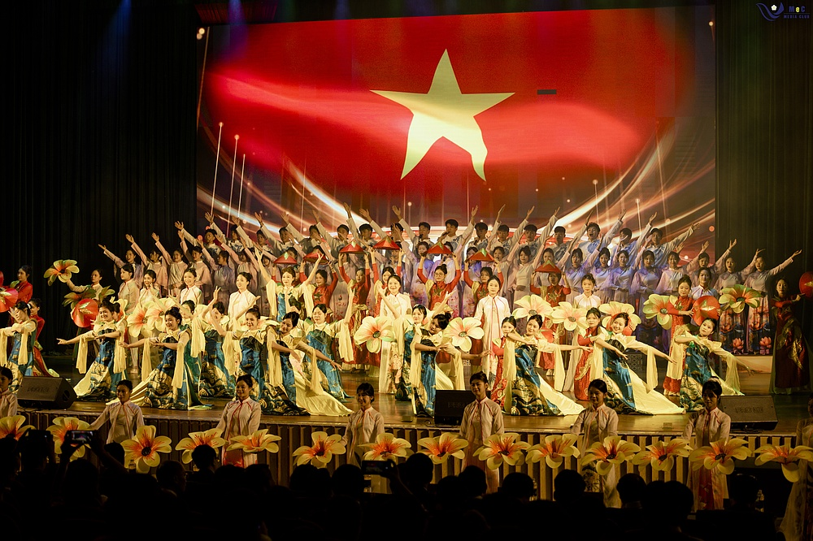
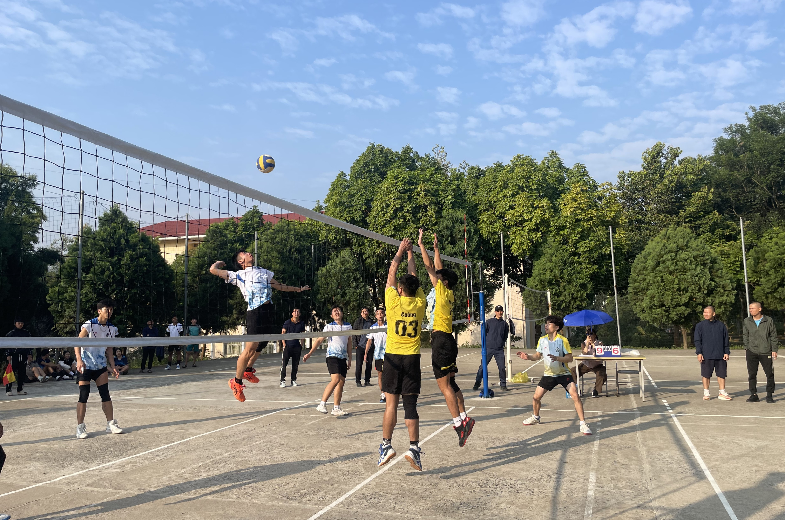
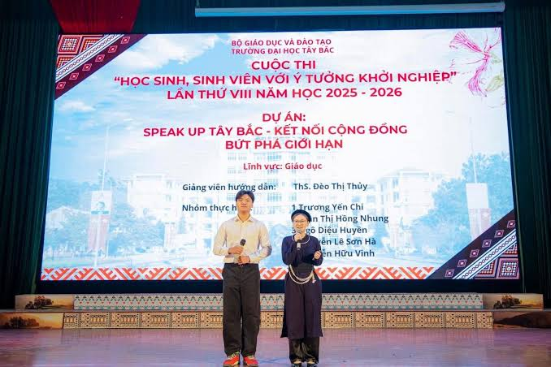

Hội thi Văn nghệ
Các đội thể hiện tiết mục hát, múa và nhảy hiện đại, mang đậm bản sắc vùng Tây Bắc.
Xem lịch thiNgày hội Sinh viên Trường Đại học Tây Bắc
Ngày hội Sinh viên Trường Đại học Tây Bắc là sự kiện dành cho toàn thể sinh viên nhà trường, do Ban tổ chức là sinh viên các khoa phối hợp thực hiện. Sự kiện gồm các hội thi văn nghệ, thể thao và học thuật, tạo sân chơi để sinh viên giao lưu và rèn luyện kỹ năng.
Website này giúp bạn xem chương trình theo khung giờ, tra cứu đội thi, theo dõi bảng kết quả và gửi phản hồi cho Ban tổ chức.
Lưu ý: thời gian và địa điểm là dữ liệu mẫu, chỉ mang tính minh họa.
Còn ... ngày ... giờ ... phút ... giây

Các đội thể hiện tiết mục hát, múa và nhảy hiện đại, mang đậm bản sắc vùng Tây Bắc.
Xem lịch thi
Kéo co, bóng chuyền và đẩy gậy: những môn thi vận động tinh thần đồng đội.
Xem danh sách đội
Phần thi kiến thức chung và kỹ năng mềm, có phần thưởng dành cho các đội xuất sắc.
Dùng công cụ tra cứu